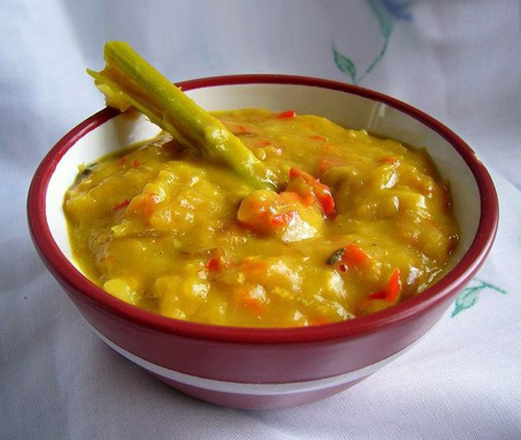

Tempoyak adalah jenis makanan khas etnis Melayu di pulau Sumatra dan Kalimantan. Makanan ini terbuat dari durian yang sudah melalui proses fermentasi. Makanan ini biasanya dikonsumsi sebagai lauk yang dicampur dengan sambal saat menyantap nasi. Cita rasa tempoyak adalah asam karena terjadinya proses fermentasi daging buah durian. Selain itu, tempoyak juga dijadikan sebagai bumbu masakan. Tempoyak dikenal di Indonesia, terutama di pulau Sumatra dan Kalimantan. Jambi, terkenal dengan tempoyak campuran ikan patin dan ikan baung dibuat gulai tempoyak dan sambal tempoyak. Sejak tahun 2011, Tempoyak sudah dicatat oleh Direktorat Warisan dan Diplomasi Budaya sebagai salah satu Warisan Budaya Takbenda (WBTB) yang berasal dari provinsi Jambi,
Resep Tempoyak
1 Kilo gram nila ukuran sedang
10 Siung bawang merah
5 Siung bawang putih
15 Biji cabai merah pedas
10 Biji cabai rawit kecil
1 Ruas lengkuas
1/2 Ruas jahe
5 Butir kemiri
1 Ons tempoyak durian
Daun kemangi secukupnya
Penyedap rasa dan gula
Daun pisang untuk membungkus